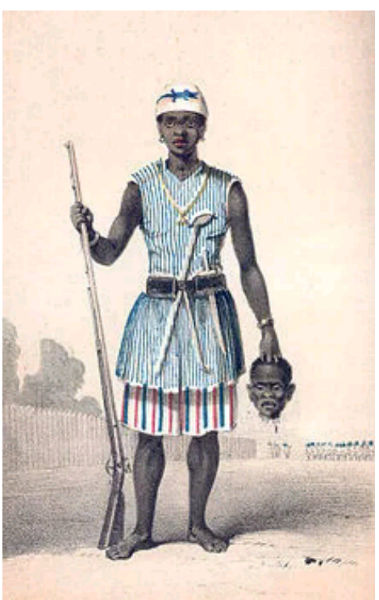
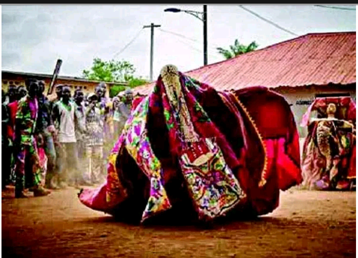

 According to oral history, Ayetoro Gegun originated near a town called Oyo-Oro. It was a big town but due to prevailing war, at that time, the in habitants of that time the habitants of the town were scattered. Hence, today we have Ayetoro located in different parts of Yoruba land. For examples, Ayetoro Fidiremi, Ayetoro Egbado, Ayetoro Gbade, Ayetoro Ile, etc As regards the present Ayetoro-Oke, their forefathers originally migrated from Ayetoro-lle near Iwere-Ile as a result of Dahomey war. They were looking for safety and this place (Ayetoro-Oke) was found to be suitable as there were and still are many rocks that could serve as places of protection, in case of sudden attacks from enemies waging war. Ogunronbi was the fore father of Ayetoro people and a brave hunter who used to climb tree as a hunter waiting for an elephant to kill and that was and still is the reason why they used to refer to Ayetoro people as Omo Gegun.
During the reign of Jelemi the Dahomians waged war against Ayetoro-lle unexpectedly and this led to the movement to Ayetoro-Oke people to their present location till this day. So, Jelemi was the Baale (King) that led the people of Ayetoro Ile to this present Ayetoro-Oke. He was the eight Baale of Ayetoro-Ile but died at Ayetoro-Oke. Ayetoro-Oke is situated on a high mountainous area, near Okeho, the headquarters of Kajola Local Government. The mountain is called lgbo-Are because of ldahomey war where they met llero peoples during the reign of Elero Akanmu. Elero Akanmu informed the then Alaafin Oladigbolu and he ordered the Elero to accommodate the people of Ayetoro-lle now Ayetoro-Oke. Elero Akanmu accepted these people to be living together at Igbo-Are, they were together for years. After some years, the Ilero people left the place without notifying their visitor but Elero Akanmu had died during this time. Today, if one is not told, hardly could someone differentiate Ayetoro-Oke from Okeho. In the same vein, hardly could anybody differentiate Iwere-Oke, Ilaji-Oke from Ayetoro- Oke. This Is because chains of houses have linked these communities together and they have been living together harmoniously.
There was a Shea butter in Ayetoro-Oke, but its stump exists still at Ayetoro market till today. It was and still a taboo for anybody to use it to make fire. Gegun of Ayetoro (Afolabi Tuku) used to hunt at lgbo-Are where his citizens were doing farming Gegun of Ayetoro has one Idol called Orisa nla and it has a spiritual leader called “Abore" in Yoruba language. Gegun of Ayetoto must not drink palm wine due to mythologIcal belief. The people of Ayetoro built a house for this Idol at Ayetoro market during that period and they used to offer sacrifices for it once in a year.
Gegun has a masquerade called “orejo”. This masquerade according to oral history Was initiated/founded by a hunter inside hole, with sword beside this masquerade. The hunter it to the king and it become and become Gegun masquerade up till date.  Christianity and Islam are the major religions in the town with small number of people in idol worshiping. The Christianity and Islam religion bring development to the town. The first government primary School was established in 1943 with the name Baptist Primary School Ayetoro- Oke. Presently Ayetoro-Oke people have four (4) public primary schools with three public secondary schools. The first Arabic school in Oke-Ogun started in Ayetoro- Oke with the name Nurudeen Islamiya Ayetoro-Oke. The First Church was established in some decades ago while the First Mosque was established a few decades back. The town has one (1) Maternity and one (1) Dispensary| 1 | Jelemi |
| 2 | Hanuna |
| 3 | Kasumo Yesufu Arogunjobewu |
| 4 | Amodu |
| 5 | Tukuru |
| 6 | Adamo |
| 7 | Alh. Lasisi |
| 8 | Najeemdeen Osuolale Afolabi (Tukuru II). |
| 1 | Agoro |
| 2 | Ikolaba |
| 3 | Maye |
| 4 | Alapo |
| 5 | Abese |
| 1 | Alfa Razaq Azeez | Chairman |
| 2 | Hon. Demola Akinleye | Secretary |
| 3 | Alfa Taofeek Ganiyu (Late) | Treasurer |
| 4 | Apostle Samuel Akedee | Member |
| 5 | Mr. Ogunyemi | Member |
| 6 | Alfa Komilu Bello | Member |
| Mr. Yekini Oguntoy | Member |
Ayetoro Gegun, omo odo nigi, ikoko lamo
Eyi ayido, ka mayi koko
Ta'a bayi koko
Inu Alamo yo baje
L'onii l'ereyo fa
Ola loka n komo ree bo wale elenini ora
Gbale gbale apa
Oniamaa gbarawe
Komo okaori 'bi kajo